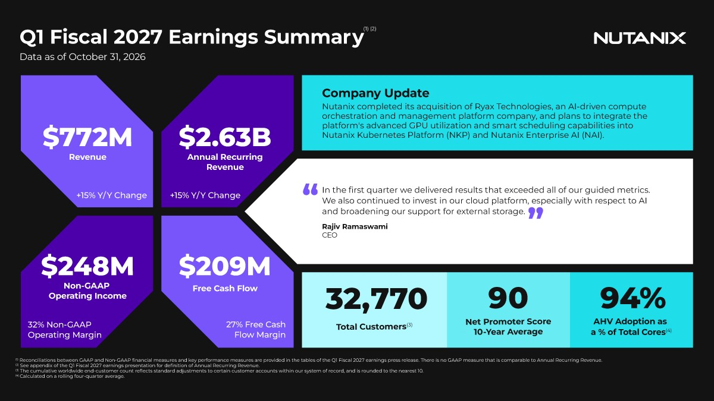

Nebenwert im Fokus ·
Nutanix übertrifft alle eigenen Ziele und verliert trotzdem seinen Chef
Umsatz plus 15 Prozent, operative Marge fast verdoppelt. Doch Rajiv Ramaswami tritt nach sechs Jahren ab, und die Jahresprognose bleibt unter den Schätzungen. Nachbörslich fiel die Aktie um rund 9 Prozent.
Redaktion Vision Universe · Stand 25.11.2026, 12:00 Uhr · 3 Min. Lesezeit
Auf dem Papier war es ein Quartal ohne Makel. Nutanix steigerte den Umsatz in den drei Monaten bis Ende Oktober um 15 Prozent auf 772,4 Millionen Dollar, die wiederkehrenden Jahreserlöse (ARR) wuchsen ebenfalls um 15 Prozent auf 2,63 Milliarden Dollar. „Im ersten Quartal haben wir Ergebnisse geliefert, die alle unsere Zielgrößen übertroffen haben“, sagte Vorstandschef Rajiv Ramaswami (übersetzt).
Doch in derselben Stunde verschickte das Unternehmen eine zweite Mitteilung: Ramaswami gibt den Chefposten ab. Dazu kam eine Jahresprognose, die laut Investing.com knapp unter den Schätzungen der Analysten liegt. Die Aktie, die im regulären Handel am Dienstag nach unseren Daten schon 5,2 Prozent auf 54,59 Dollar verloren hatte, fiel nachbörslich laut Investing.com um weitere rund 9 Prozent.
Geschäftsjahr endet Ende Juli; Q2-Ausblick als Mitte der Spanne von 820 bis 830 Mio. $ · Quelle: Nutanix, Mitteilung vom 24.11.2026
Was hinter dem Chefwechsel steht
Ramaswami führt Nutanix seit sechs Jahren. In seine Zeit fällt der Umbau zum Abo-Modell: Von den 772 Millionen Dollar Quartalsumsatz stammen inzwischen 735 Millionen aus Abonnements. Laut der Pflichtmitteilung an die US-Börsenaufsicht SEC bleibt er Vorstandschef und Mitglied des Verwaltungsrats, bis ein Nachfolger antritt, längstens bis zum 30. April 2027. Der Verwaltungsrat hat dafür eine landesweit tätige Personalberatung beauftragt; einen Übergangschef nennt das Unternehmen nicht.
Danach soll Ramaswami bis Ende September 2027 als Berater zur Verfügung stehen. Verwaltungsratschefin Virginia Gambale würdigte seinen „enormen Einfluss auf das Geschäft“ (übersetzt). Gründe für den Abschied nennt keine der Mitteilungen. Für Anleger heißt das vor allem: Bis zu fünf Monate lang ist offen, wer die Strategie künftig verantwortet.
Ein Quartal mit deutlich mehr Gewinn
Bemerkenswert ist vor allem die Profitabilität. Die bereinigte operative Marge stieg von 19,7 auf 32,1 Prozent, nach den strengeren GAAP-Regeln von 7,4 auf 18,5 Prozent. Der freie Cashflow, also das Geld, das nach Investitionen übrig bleibt, wuchs von 174,5 auf 209,3 Millionen Dollar. Der bereinigte Gewinn je Aktie lag bei 0,73 Dollar; die Analysten hatten laut Investing.com im Schnitt 0,61 Dollar erwartet.
Nutanix verkauft Software, mit der Unternehmen Server, Speicher und Anwendungen im eigenen Rechenzentrum und in der Cloud gemeinsam verwalten. Laut der Quartalsübersicht zählt die Firma 32.770 Kunden. Im Quartal schloss Nutanix die Übernahme von Ryax Technologies ab, einer Software zur Steuerung von Rechenaufgaben auf KI-Chips.
Non-GAAP, laut Unternehmen · Quelle: Nutanix, Mitteilung vom 24.11.2026

„Ich werde den Verwaltungsrat bei der Suche unterstützen und eine reibungslose Übergabe an die nächste Führung von Nutanix sicherstellen.“
Rajiv Ramaswami, Vorstandschef von Nutanix, Mitteilung vom 24.11.2026 (übersetzt)
Warum die Prognose enttäuscht
Für das laufende Geschäftsjahr bis Ende Juli 2027 erwartet Nutanix einen Umsatz von 3,18 bis 3,23 Milliarden Dollar. Die Mitte der Spanne, 3,205 Milliarden, liegt laut Investing.com unter den 3,22 Milliarden, mit denen Analysten im Schnitt gerechnet hatten. Der Abstand ist klein, kaum ein halbes Prozent. Für das zweite Quartal entspricht die Prognose von 820 bis 830 Millionen Dollar dagegen den Schätzungen.
Beim Gewinn plant Nutanix vorsichtiger als im ersten Quartal: Die bereinigte operative Marge soll im Gesamtjahr bei 24,5 bis 25,5 Prozent liegen, der freie Cashflow bei 875 bis 975 Millionen Dollar. Zusammen mit dem offenen Chefposten reichte das, um die gute Quartalsbilanz an der Börse in den Hintergrund zu drängen.
Geschäftsjahr bis Ende Juli 2027 · Quelle: Nutanix, Mitteilung vom 24.11.2026; Investing.com
Was unsere Daten zeigen
Nach unseren Daten schloss die Aktie am Dienstag bei 54,59 Dollar, vor dem nachbörslichen Rückgang. Sie liegt damit 28 Prozent unter ihrem Hoch, 25 Prozent unter dem Stand von vor einem Monat und 5 Prozent unter dem Vorjahr. Der Börsenwert beträgt rund 14,8 Milliarden Dollar. Unser Trendmodul steht auf abwärts, die relative Stärke gegenüber dem Gesamtmarkt bei 52 von 100.
In unseren Geschäftszahlen, die bis zum Ende des vergangenen Geschäftsjahres im Juli reichen, liegt der Umsatz der letzten zwölf Monate bei rund 2,85 Milliarden Dollar, 12 Prozent mehr als im Vorjahr. Das Kurs-Umsatz-Verhältnis liegt bei 5,2, die Marge des freien Cashflows bei 29 Prozent. Unser Gesundheitscheck bewertet das Wachstum als stark, Profitabilität und Cashflow als sehr stark. Unter den 12 großen Fonds, deren Meldungen wir zum dritten Quartal auswerten, gab es 4 Käufer und 13 Verkäufer.
Termine
- 24.11.2026Nutanix: Zahlen zum 1. Geschäftsquartal, Ankündigung des Chefwechsels
- spätestens 30.04.2027Nutanix: Ramaswami bleibt bis zum Antritt eines Nachfolgers, längstens bis zu diesem Tag
Quellen
- Nutanix (SEC, Form 8-K, Exhibit 99.1): Nutanix Reports First Quarter Fiscal 2027 Financial Results, 24.11.2026
- Nutanix (SEC, Form 8-K, Exhibit 99.2): Nutanix Announces CEO Succession Plan, 24.11.2026
- Nutanix (SEC, Form 8-K): Form 8-K, Item 5.02: Departure of Directors or Certain Officers, 24.11.2026
- Investing.com: Nutanix stock drops 9% on weak FY guidance and CEO exit, 24.11.2026
Zitate aus englischen Quellen sind übersetzt. Kurse, Kennzahlen und Fondsdaten im Kasten stammen aus Vision Universe (Stand siehe Kasten). Angabe Dritter: zusammengefasste Einschätzungen externer Analysten bzw. Pflichtmeldungen an die SEC, unverändert mit Quelle und Datum. Nicht von Vision Universe erstellt und keine Einschätzung von Vision Universe. Dieser Artikel wurde automatisch erstellt und vor der Veröffentlichung gegen die genannten Quellen geprüft.
Vision Universe
Diese Aktie mit allen Zahlen
Kurs, Bewertung, Geschäftszahlen, Chart und was große Fonds tun: In Vision Universe steht zu jeder Aktie dieselbe Analyse, auf der dieser Artikel aufbaut.
Artikel in Vision Universe öffnen→ Zum Start der App benachrichtigen